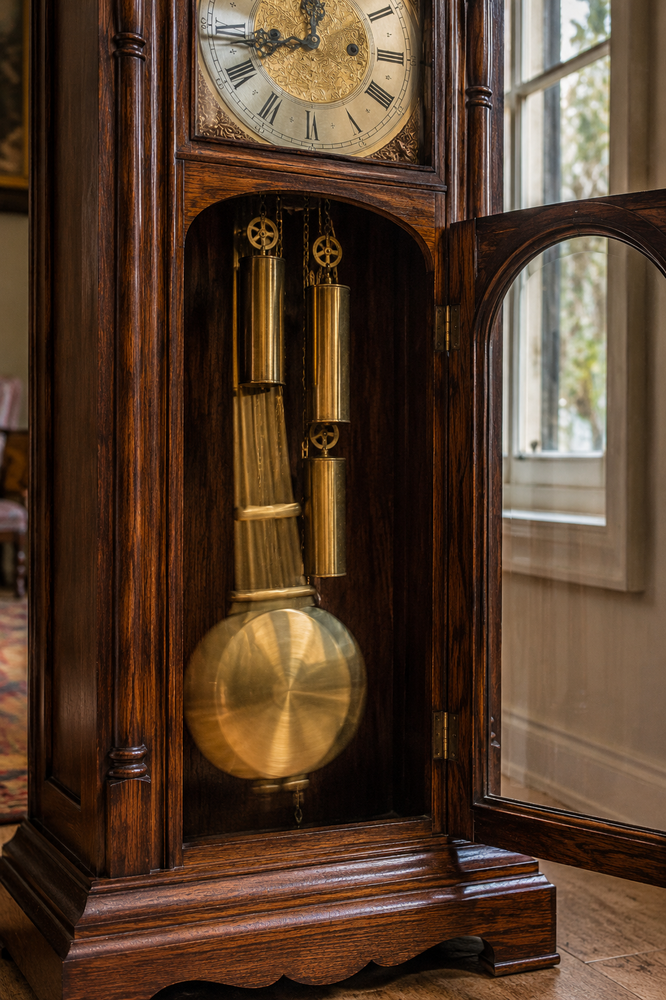
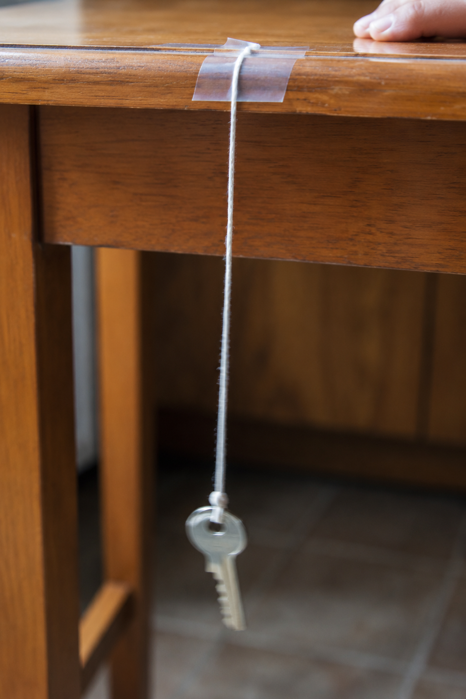

Hold that question in your mind as you work. By the end, you should be able to answer it — with evidence.
Start here. Learn the words you will use today.
Think about a playground swing. Someone gives it a push. It swings forward — then back. Forward — then back. Does it keep doing the same thing? What do you notice about how it moves?
Write at least two things you notice and one question you're wondering about. Don't worry about being right — just look and think.
Copy this sentence carefully into your notebook:
"When motion repeats in a pattern, scientists can predict what will happen next."
Now learn the main science idea.
Not all motion is random. Some objects move in a way that repeats. A pendulumpendulumAn object attached to a fixed point that swings back and forth. swings one way, then the other — and keeps doing it. A swing at a playground does the same thing.
Each complete swing back and forth is called a cyclecycleOne complete trip through a repeating motion — like one full swing back and forth.. The motion follows the same path every cycle. That's what makes it a pattern.
When motion repeats the same way, it forms a patternpatternSomething that repeats in a predictable, regular way.. Patterns are powerful — they let you say what will happen next, before it happens.
If a pendulum swings 10 times in one minute, it will probably swing about 10 times in the next minute too. That's not a guess. It's a predictionpredictTo use what you already know or observed to say what will happen next. backed by observationobservationInformation gathered by watching or measuring carefully. and evidence. Scientists rely on this kind of thinking all the time.
A bouncing ball bounces a little lower each time. A swing slows down if nobody pushes it. The motion is changing — but the pattern is still there. Scientists track changes like these by counting and measuring over time.
Even when motion fades, the data shows the pattern clearly. That's why scientists record their observations carefully. The numbers tell the story.
Real-World Connection: The pendulum inside a grandfather clock swings in such a regular pattern that it can move the clock's hands forward by exactly one second per tick.

When an object moves in a repeating pattern, you can use that pattern to predict future motion. Observations are evidence — and evidence is how scientists make reliable predictions.
Curious? Go Deeper
Galileo's discovery about pendulums was one of the most important in the history of science. He found that a longer pendulum swings more slowly than a shorter one — but both are perfectly regular. That regularity is exactly what makes a pendulum useful for keeping time.
Engineers who design clocks still use this principle today. A pendulum that is exactly 99.4 cm long swings once per second — every time, like clockwork. That's a prediction you can set your watch to. Scientists also study repeating motion in nature: the beating of a heart, ocean waves rolling in, the wings of a hummingbird. All of them follow patterns. All of them can be measured and predicted.
What other repeating patterns do you see in the world around you? How might a scientist measure and record them?
Now test the idea yourself.
You'll need: A piece of string about 30 cm long, a small heavy object (key, washer, large eraser), tape or a table edge, a timer or phone clock, and your science notebook.

Follow each step carefully. Record what you find in your notebook as you go.
Build it: Tie your heavy object to one end of the string. Tape the other end to the edge of a table or hold it steady with your hand. Make sure the weight hangs freely.
Watch it: Give it a small, gentle push. Watch it swing back and forth. Count one cycle as the weight going out and coming back. Watch 5 swings before you start counting.
Count it: Start your timer. Count how many full swings happen in 15 seconds. Write that number down. Do it again — a second trial. Did you get a similar number?
Predict it: Based on your count, predict: how many swings will happen in 30 seconds? Write your prediction first — then time it and check. Was your prediction close?
Think about it: As you look back at your investigation, consider these questions. You'll use your best thinking in the Write & Explain section.
Tell the story of your investigation from beginning to end — what you did, what you counted, and what you figured out. Use your notes to help you say it clearly.
Think through each question on your own. Talk it through in your mind — or discuss with someone nearby.
Check what you understand.
Show what you learned.
🔍 Part A — Identify the Pattern
Read each motion below. Write yes if it shows a repeating pattern or no if it does not. Then write one sentence explaining your answer.
🚀 Part B — Short Answer
Answer each question in complete sentences. Use your science vocabulary!
How does a repeating pattern in motion help you predict what will happen next?
What do you think?
💡 Start with: "I think that a pattern in motion helps because…"
What did you observe or learn that supports your thinking?
💡 Start with: "I know this because when I observed my pendulum…"
Why does that make sense?
💡 Start with: "This makes sense because…"
📚 Try to use at least one of these words in your answer: pattern, predict, observation, cycle
🎨 Part C — Draw & Label
Draw a pendulum in motion. Show at least three positions of the pendulum during one swing. Label: the fixed point at the top, the lowest point, both turning points, and the direction of motion with arrows.
Submit your work on Canvas using one of these options:
Make sure your submission includes all of these: